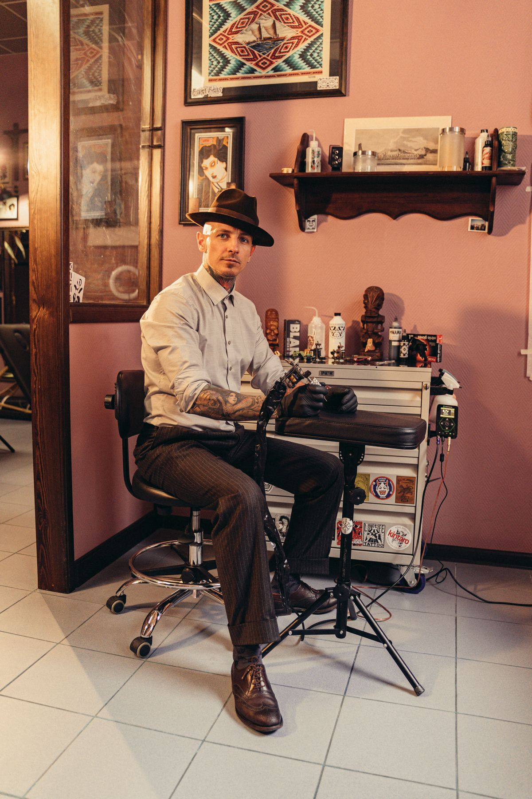
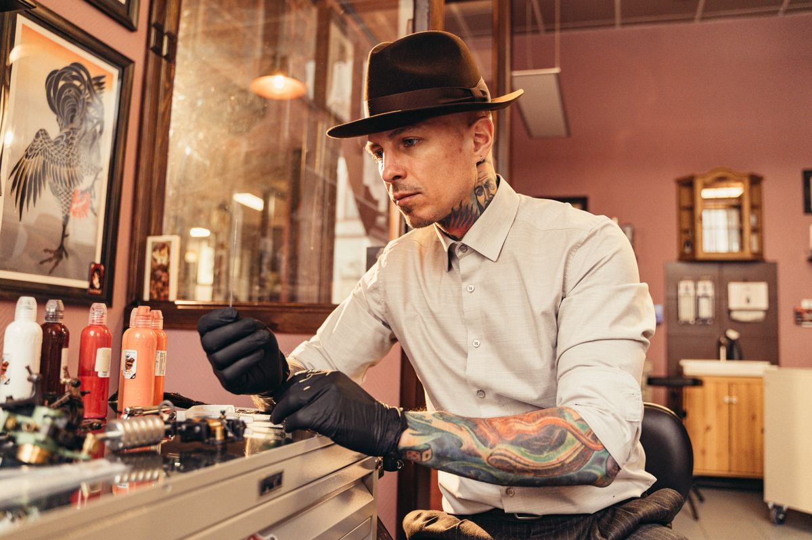

The studio
One artist, one chair, kept properly
Ink & Iron is a single-artist studio. The person who answers your email draws your piece, tattoos it, and answers your healing questions at midnight if that is when you ask them.
Tom Ellery started tattooing in 2012, sweeping floors and making needles in a Leeds street shop in exchange for being taught properly. The apprenticeship took two years — drawing every day, watching every sitting, tattooing nothing until his mentor said the line work had earned it. That order of things still runs this studio: drawing first, machine second, opinion throughout.
After six years in Leeds and two guesting around the country, he opened Ink & Iron on Stokes Croft in 2020: one chair, appointment only, no walk-in queue at the door. The work narrowed deliberately to black ink only — blackwork, traditional and black & grey — because depth in three ways of working beats a shallow version of twelve, and because black is the ink that ages with the most honesty.
The studio's rule, and the reason this site is built the way it is: a piece is finished when it has healed, not when the client stands up. Every large piece is staged so healed layers are judged before more work is added, every rate is published, and every client leaves knowing exactly what happens next and what it will cost if it doesn't heal as planned.
Training & standing
Formal apprenticeship served 2012–2014, Leeds. Tattooing professionally since 2014. Bloodborne-pathogen and cross-contamination training renewed annually. Member of his local authority's registered-practitioner scheme since the studio opened. Guest spots and convention work by invitation; teaching one apprentice at a time, occasionally — enquiries about apprenticeships are answered honestly, including when the answer is no.

Hygiene & licensing
The unglamorous page that matters most
Ask any studio these questions before you book. Here are this studio's answers, in writing.
Registration
The premises and practitioner are registered with Bristol City Council under the Local Government (Miscellaneous Provisions) Act 1982, and the certificate hangs by the door. Tattooing anyone under 18 is illegal in the UK — the Tattooing of Minors Act 1969 — and photo ID is checked on the day for every client, whatever your age looks like.
Needles & equipment
Every needle is single-use, sterile-packed, and opened in front of you; it goes into the sharps container the moment the sitting ends, in front of you too. Anything that cannot be single-use is barrier-wrapped for each client. Ink goes into single-use caps, never back into the bottle.
The station
The station is broken down, disinfected and re-wrapped between clients — allow the unhurried half hour you will see in your appointment time. Clinical waste, including all sharps, leaves under a licensed waste contract. Gloves are changed whenever the sterile field is left, including to answer the door.
Consent & health
Every sitting starts with a consent and health form: medications, skin conditions, allergies, blood-borne conditions. Some answers change the plan — blood thinners, certain skin conditions, pregnancy — and a few stop it, in which case your deposit is returned in full. Nothing on the form is shared; it is kept with your record and destroyed after seven years.

Aftercare
The instructions you leave with
Half of how a tattoo heals is done in the chair; the other half is the next two weeks. This is the sheet every client takes home, printed here in full so you can judge the studio by it before you book.
- The first hours. Your piece is washed, and covered with a sterile adhesive film before you leave. Leave the film on for the time you were told — usually three to five days. It will fill with fluid and look alarming; that is normal, and it is sealed, so leave it.
- Removing the film. Take it off in the shower, under warm running water, peeling slowly back over itself. Wash the tattoo gently with clean hands and a mild, fragrance-free soap. Pat dry with a clean paper towel — not the bathroom towel.
- Moisturising. Once the film is off, apply the recommended balm in a layer thin enough to read the tattoo through — two or three times a day, after washing. If it looks wet, you have used too much. Keep this up for about two weeks, until the surface stops flaking.
- What healing looks like. Days 3–10: itching, flaking, and dull, milky-looking skin over the ink. Do not pick, scratch or peel it — flakes pulled early take ink with them, and the touch-up policy below assumes you didn't. The tattoo is surface-healed at about two weeks and fully settled at six.
- Water. Showers are fine. Baths, swimming pools, the sea, hot tubs and saunas are not, for two weeks — soaking a healing tattoo is the commonest cause of a bad heal this studio sees.
- Sun. Keep it covered and out of direct sun while it heals; a healing tattoo burns fast and fades faster. After it has healed, suncream (factor 50) is the difference between black that stays black and black that turns blue-grey by year five.
- Clothing & training. Loose, clean, soft clothing over the piece for the first week. Avoid training the tattooed area hard for a few days, and wipe down any shared equipment before it touches the area for the first fortnight.
- When to get in touch. Email the studio — bookings@inkandiron.example — if you see spreading redness after day three, yellow crusting, swelling that is increasing rather than settling, or you are simply worried. Healing questions are answered by Tom personally, and a photograph of the area helps. If you feel unwell or see red lines tracking from the piece, skip the email and see a doctor or pharmacist the same day.
Touch-up policy
One touch-up sitting is free within twelve months of the final sitting, for any area that has healed light where aftercare was followed — a line that dropped out, a patch of black that settled pale. Touch-ups are booked like sittings and take priority in the diary. The policy does not cover changes of mind, additions, damage from picking or sunburn during healing, or hands, fingers, feet and necks, where fading is a property of the placement itself and is explained before any deposit is taken.
Work this studio will not take on
- Anyone under 18 — illegal, and not negotiable with parental consent
- Faces, and hands or necks as a first tattoo — placements that can cost you work, explained fully at consultation
- Hate symbols and gang insignia, in any style, at any size
- Another artist's custom design, copied — bring it as a reference and yours will be drawn from it, not traced from it
- Anyone under the influence of alcohol or drugs on the day
- Tattooing over sunburn, broken skin, active eczema or psoriasis, or a scar less than a year healed
- Colour work — a black-ink studio; you will be referred to artists whose colour work Tom would wear himself
- Rush work for a holiday, a wedding or a photograph next week — healing takes the time it takes
Come and see the studio first
Consultations happen in the room, at the chair, with the book open. If you are deciding between studios, visit all of them — and ask every one the questions on this page.
Book a consultation or write to bookings@inkandiron.example